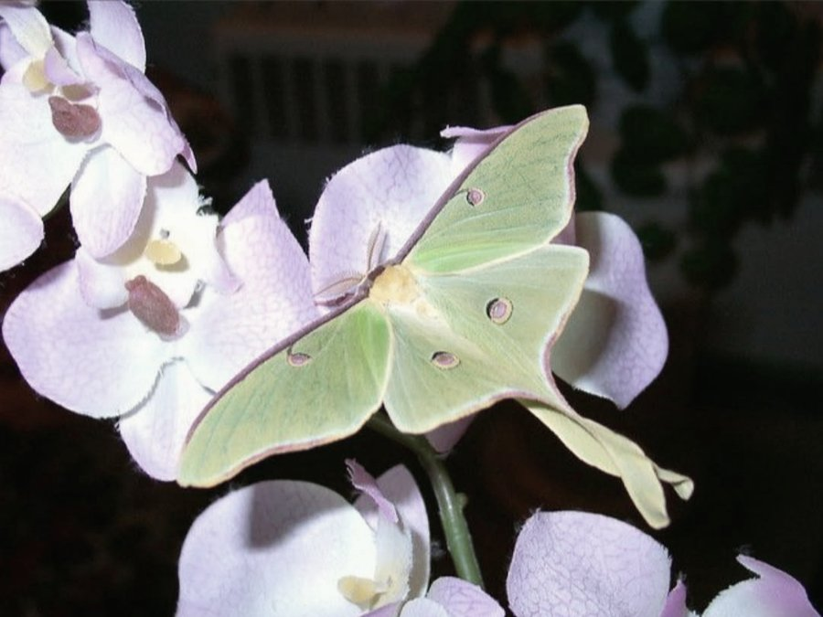
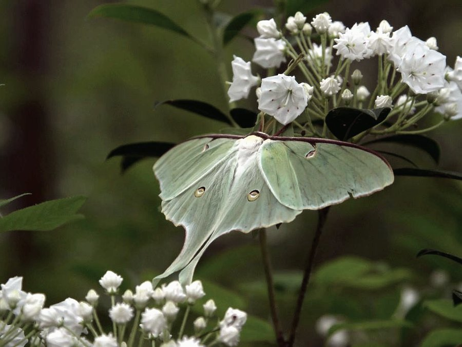
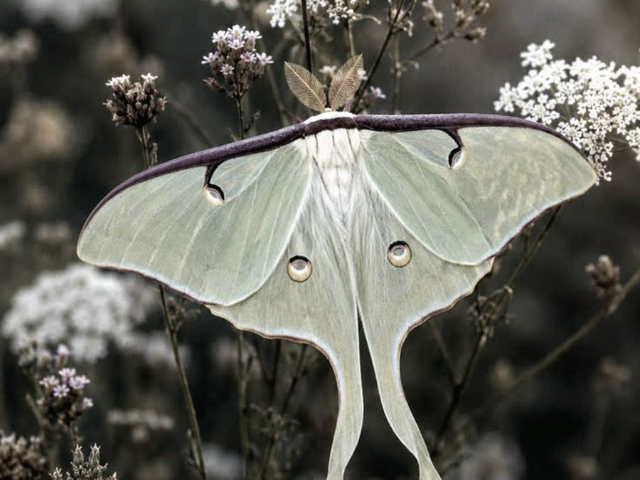
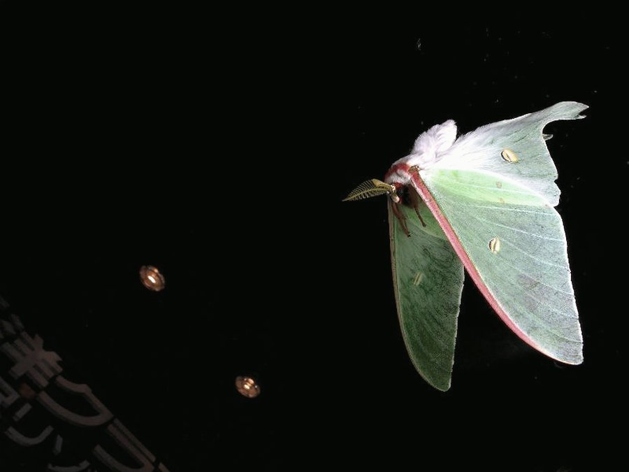
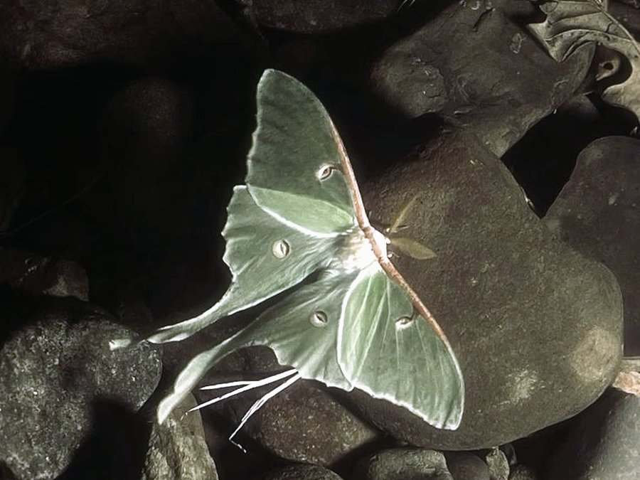

One of the most striking moths in North America, and one most people will never see. Adults live for about a week, fly only at night, and never eat.
Rarely Seen

Pale lime green, about 8 to 11.5 cm across, with one eyespot on each wing.

The long tails on its back wings may help it escape bats.

The front edge of each wing is lined in a thin band of maroon to brown.

Adults only fly after dark, which is why so few people see one.

Adults have no working mouth and never eat. They live off energy stored as caterpillars.
Etymology
-
1700
Phalena plumata caudata
The first name, given by James Petiver. It roughly means "brilliant feather tail."
-
1758
Phalaena luna
Carl Linnaeus renamed it in the tenth edition of Systema Naturae.
-
Today
Actias luna
Luna comes from the Roman moon goddess, which gave it the common name luna moth.
The luna moth was the first North American giant silk moth to be written about in insect books. Several of its relatives were also named after Roman or Greek mythology.
Life Cycle
-
01 Egg
Laid on leaves of walnut, hickory, and birch. Hatches in about a week.
-
02 Caterpillar
Eats and grows for six to seven weeks, shedding its skin five times.
-
03 Cocoon
Rests for about two weeks, or all winter in colder places.
-
04 Moth
Comes out with wings and lives for only seven to ten days.